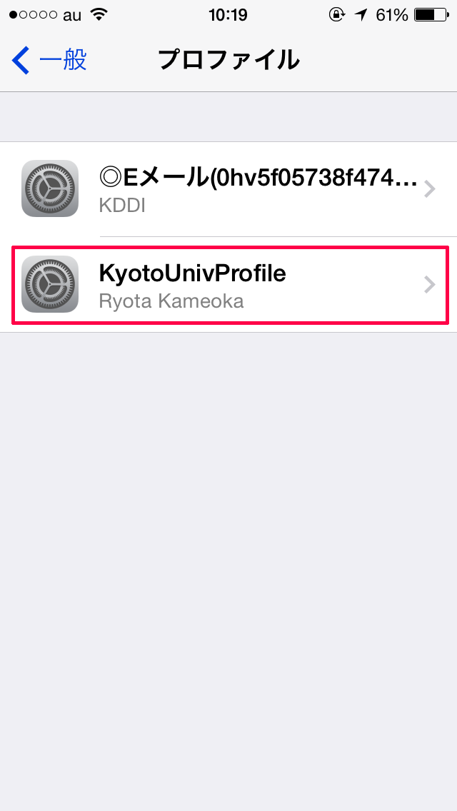
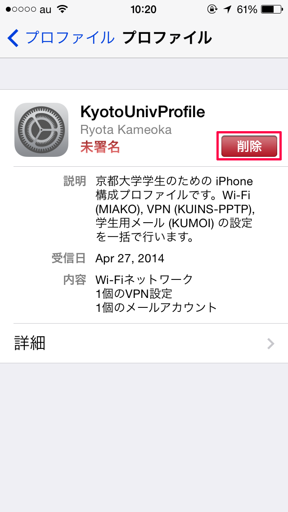
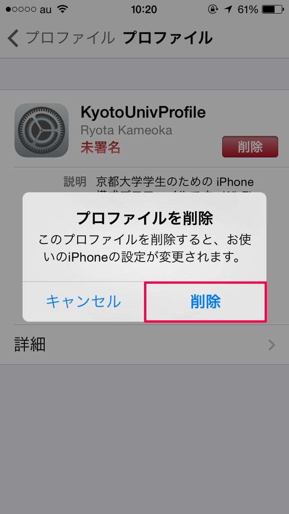
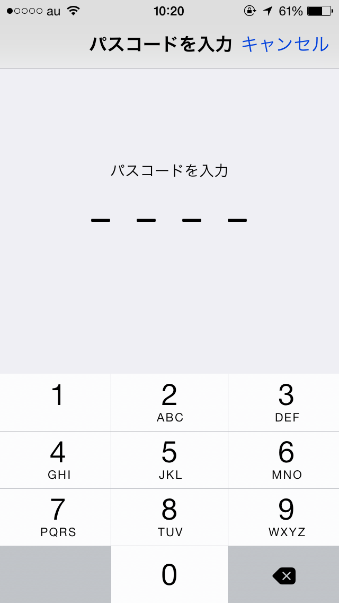

ホーム画面から 設定 > 一般 > プロファイル > KyotoUnivProfile を選択します。
「削除」をタップします。
「削除」をタップします。
iPhone にパスコードロックがかかっている場合、パスコードを入力します。
入力されたすべての情報は、iPhone 構成プロファイルの作成のみに使用され、サーバーに保存されたり、第三者に情報が送信されることはありません。
このアプリケーションは一個人が開発したものであり、京都大学当局とは一切関係ありません。
このアプリケーションを使用することによって生じた、いかなる損害についても、製作者はその責任を負いかねますので、あらかじめご了承ください。